Java虚拟机_垃圾回收（一）
什么是垃圾
Java = (C++)–
什么是垃圾（ Garbage） 呢？
➢垃圾是指在运行程序中没有任何指针指向的对象，这个对象就是需要被回收的垃圾。
➢外文： An object is considered garbage when it can no longer be reached from any pointer in the runningprogram.
如果不及时对内存中的垃圾进行清理，那么，这些垃圾对象所占的内存空 间会一直保留到应用程序结束，被保留的空间无法被其他对象使用。甚至可能导致内存溢出。
- 垃圾收集，不是Java语言的伴生产物。早在1960年，第一门开始使用内存动态分配和垃圾收集技术的Lisp语言诞生。
- 关于垃圾收集有三个经典问题：
- ➢哪些内存需要回收？
- ➢什么时候回收？
- ➢如何回收？
- 关于垃圾收集有三个经典问题：
- 垃圾收集机制是Java的招牌能力，极大地提高了开发效率。如今，垃圾收
集几乎成为现代语言的标配，即使经过如此长时间的发展，Java的垃圾收集机制仍然在不断的演进中，不同大小的设备、不同特征的应用场景，对垃圾收集提出了新的挑战，这当然也是面试的热点。
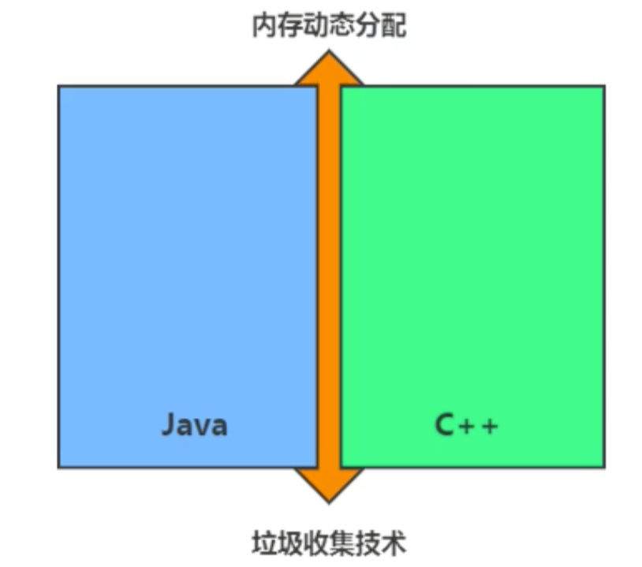
大厂面试题
蚂蚁金服：
- 你知道哪几种垃圾回收器，各自的优缺点，重点讲一下 cms和g1
- 一面： JVM GC算法有哪些，目前的JDK版本采用什么回收算法
- 一面： （ G1回收器讲下回收过程
- GC是什么？为什么要有GC？
- 一面： GC的两种判定方法？ CMS收集器与G1收集器的特点。
百度：
- 说一下GC算法，分代回收说下
- 垃圾收集策略和算法
天猫：
- 一面： jvm GC原理，JVM怎么回收内存
- 一面： CMS特点，垃圾回收算法有哪些？各自的优缺点，他们共同的缺点是什么？
滴滴：
- 一面： java的垃圾回收器都有哪些，说下g1的应用场景，平时你是如何搭配使用垃圾回收器的
京东：
- 你知道哪几种垃圾收集器，各自的优缺点，重点讲下cms和G1，包括原理，流程，优缺点。垃圾回收算法的实现原理。
阿里：
- 讲一讲垃圾回收算法。
- 什么情况下触发垃圾回收？
- 如何选择合适的垃圾收集算法？
- JVM有哪三种垃圾回收器？
字节跳动：
- 常见的垃圾回收器算法有哪些，各有什么优劣？
- system.gc （）和runtime.gc（）会做什么事情？
- 一面： Java GC机制？ GC Roots有哪些？
- 二面： Java对象的回收方式，回收算法。
- CMS和G1了解么，CMS解决什么问题，说一下回收的过程。
- CMS回收停顿了几次，为什么要停顿两次。
为什么需要GC
- 对于高级语言来说，一个基本认知是如果不进行垃圾回收，内存迟早都会被消耗完，因为不断地分配内存空间而不进行回收，就好像不停地生产生活垃圾而从来不打扫一样。
- 除了释放没用的对象，垃圾回收也可以清除内存里的记录碎片。碎片整理将所占用的堆内存移到堆的一端，以便JVM 将整理出的内存分配给新的对象。
- 随着应用程序所应付的业务越来越庞大、复杂，用户越来越多，没有GC就不能保证应用程序的正常进行。而经常造成STW的GC又跟不上实际的需求，所以才会不断地尝试对GC进行优化。
早期垃圾回收
- 在早期的C/C++时代，垃圾回收基本.上是手工进行的。开发人员可以使用
new关键字进行内存申请，并使用delete关键字进行内存释放。比如以下代码：
1 | MibBridge *pBridge = new cmBaseGroupBridge （） ； |
- 这种方式可以灵活控制内存释放的时间，但是会给开发人员带来频繁申请和释放内存的管理负担。倘若有一处内存区间由于程序员编码的问题忘记被回收，那么就会产生内存泄漏，垃圾对象永远无法被清除，随着系统运行时间的不断增长，垃圾对象所耗内存可能持续上升，直到出现内存溢出并造成应用程序崩溃。
- 在有了垃圾回收机制后，上述代码块极有可能变成这样：
1 | MibBridge *pBridge = new cmBaseGroupBridge()； |
- 现在，除了Java以外，C#、Python、 Ruby等语言都使用了自动垃圾回收的思想，也是未来发展趋势。可以说，这种自动化的内存分配和垃圾回收的方式己经成为现代开发语言必备的标准。
Java垃圾回收机制
- 自动内存管理，无需开发人员手动参与内存的分配与回收，这样降低内存泄漏和内存溢出的风险
- 没有垃圾回收器，java也会和cpp一样，各种悬垂指针，野指针，泄露问题让你头疼不已。
- 自动内存管理机制，将程序员从繁重的内存管理中释放出来，可以更专心地专注于业务开发
- oracle官 网关于垃圾回收的介绍
- https：//docs.oracle.com/javase/8/docs/ technotes/guides/vm/gctuning/toc.html
- 对于Java开发人员而言，自动内存管理就像是一个黑匣子，如果过度依赖于
“自动”，那么这将会是一场灾难，最严重的就会弱化Java开发人员在程序出现内存溢出时定位问题和解决问题的能力。
- 此时，了 解JVM的自动内存分配和内存回收原理就显得非常重要，只有在真
正了解JVM是如何管理内存后，我们才能够在遇见OutOfMemoryError时， 快速地根据错误异常日志定位问题和解决问题。
- 当需要排查各种内存溢出、内存泄漏问题时，当垃圾收集成为系统达到更高
并发量的瓶颈时，我们就必须对这些“自动化”的技术实施必要的监控和调节。
- 垃圾回收器可以对年轻代回收，也可以对老年代回收，甚至是全堆和方法区的回收。
- 其中，Java堆是垃圾收集器的工作重点。
- 从次数上讲：
- 频繁收集Young区
- 较少收集01d区
- 基本不动Perm区
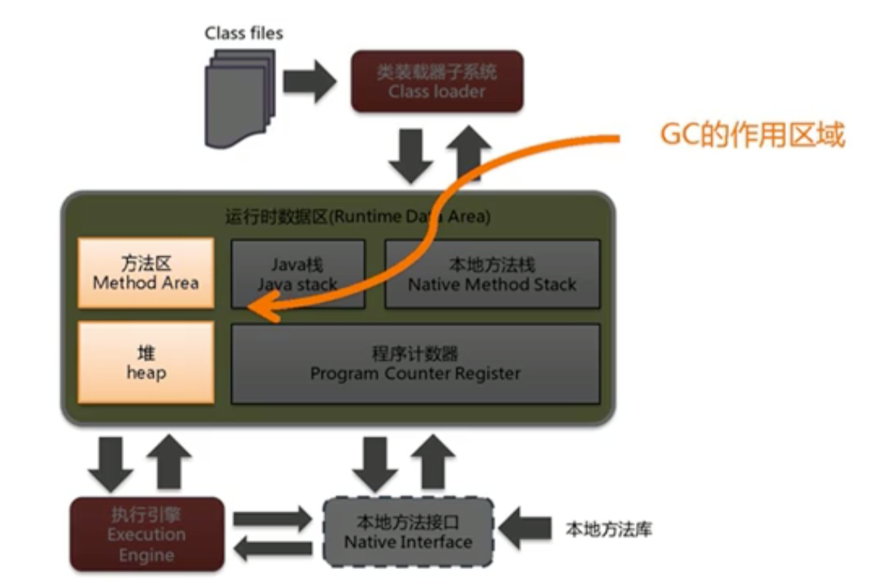
2. 垃圾回收相关算法
垃圾标记阶段:对象存活判断
- 在堆里存放着几乎所有的Java对象实例，在GC执行垃圾回收之前，首先需要区分出内存中哪些是存活对象，哪些是已经死亡的对象。只有被标记为己经死亡的对象，GC才会在执行垃圾回收时，释放掉其所占用的内存空间，因此这个过程我们可以称为垃圾标记阶段。
- 那么在JVM中究竟是如何标记一个死亡对象呢？简单来说，当一个对象已经不再被任何的存活对象继续引用时，就可以宣判为已经死亡。
- 判断对象存活一般有两种方式： **引用计数算法 **和 可达性分析算法 。
2.1 标记阶段:法1_引用计数法 (java没有采用)
- 引用计数算法（Reference Counting）比较简单，对每个对象保存一个整型 的引用计数器属性。用于记录对象被引用的情况。
- 对于一个对象A，只要有任何一个对象引用了A，则A的引用计数器就加1；当引用失效时，引用计数器就减1。只要对象A的引用计数器的值为0，即表示对象A不可能再被使用，可进行回收。
- 优点：实现简单，垃圾对象便于辨识；判定效率高，回收没有延迟性。
- 缺点：
- ➢它需要单独的字段存储计数器，这样的做法增加了存储空间的开销。
- ➢每次赋值都需要更新计数器，伴随着加法和减法操作，这增加了时间开销。
- ➢引用计数器有一个严重的问题，即无法处理循环引用的情况。这是一 条致命缺陷，导致 在Java的垃圾回收器中没有使用这类算法 。
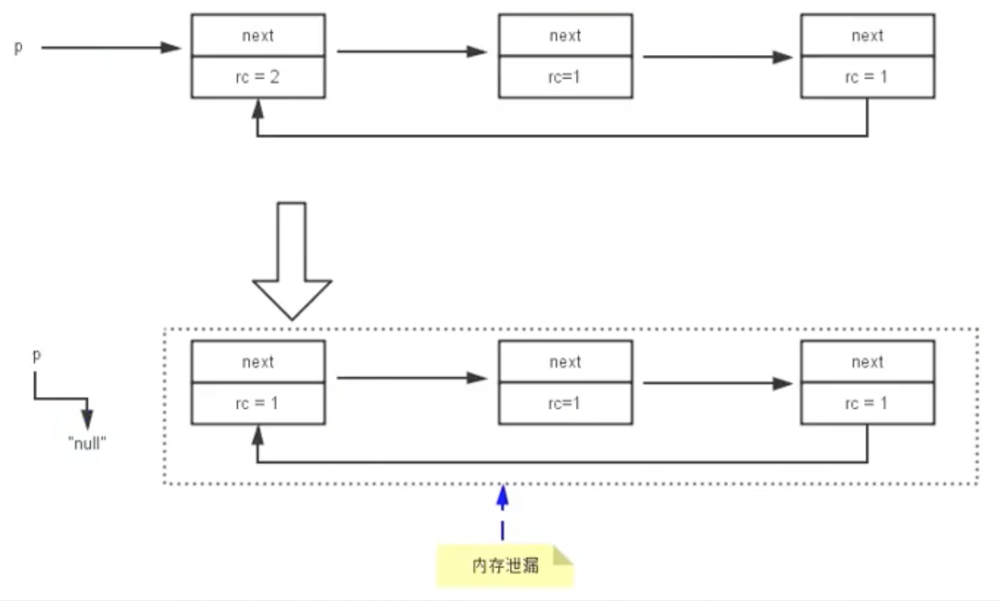
图示分析证明java没有采用引用计数法
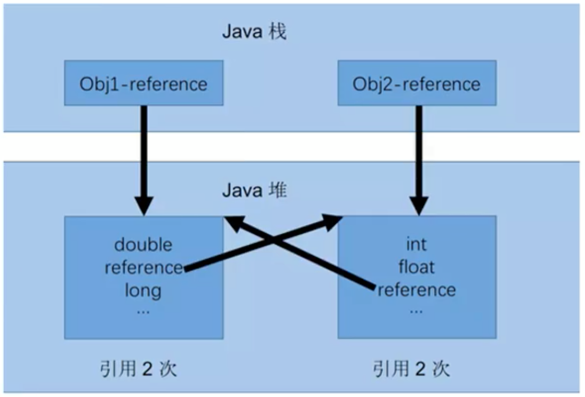
如果不下小心直接把0bj1 一reference和0bj2 一reference置null。 则在Java堆当中的两块内存依然保持着互相引用，无法回收。
1 | /** |
小结
- 引用计数算法， 是很多语言的资源回收选择，例如因人工智能而更加火热的Python，它更是同时支持引用计数和垃圾收集机制。
- 具体哪种最优是要看场景的，业界有大规模实践中仅保留引用计数机制，以提高吞吐量的尝试。
- Java并没有选择引用计数，是因为其存在一个基本的难题，也就是很难处理循环引用关系。
- Python 如何解决循环引用？
- ➢手动解除： 很好理解，就是在合适的时机，解除引用关系。
- ➢使用弱引用weakref，weakref是Python提供的标准库，旨在解决循环引用。
2.2 标记阶段:法2_可达性分析算法
也叫根搜索算法或追踪性垃圾收集
- 相对于引用计数算法而言，可达性分析算法不仅同样具备实现简单和执行高
效等特点，更重要的是该算法可以有效地解决在引用计数算法中循环引用的问题，防止内存泄漏的发生。
- 相较于引用计数算法，这里的可达性分析就是Java、C#选择的。这种类型的垃圾收集通常也叫作追踪性垃圾收集（Tracing GarbageCollection）。
- 所谓"GC Roots"根集合就是一组必须活跃的引用。
- 基本思路：
- ➢可达性分析算法是以根对象集合(GCRoots）为起始点，按照从上至下的方式搜索被根对象集合所连接的目标对象是否可达。
- ➢使用可达性分析算法后，内存中的存活对象都会被根对象集合直接或间接连接着，搜索所走过的路径称为引用链（Reference Chain）
- ➢如果目标对象没有任何引用链相连，则是不可达的，就意味着该对象己经死亡，可以标记为垃圾对象。
- ➢在可达性分析算法中，只有能够被根对象集合直接或者间接连接的对象才是存活对象。
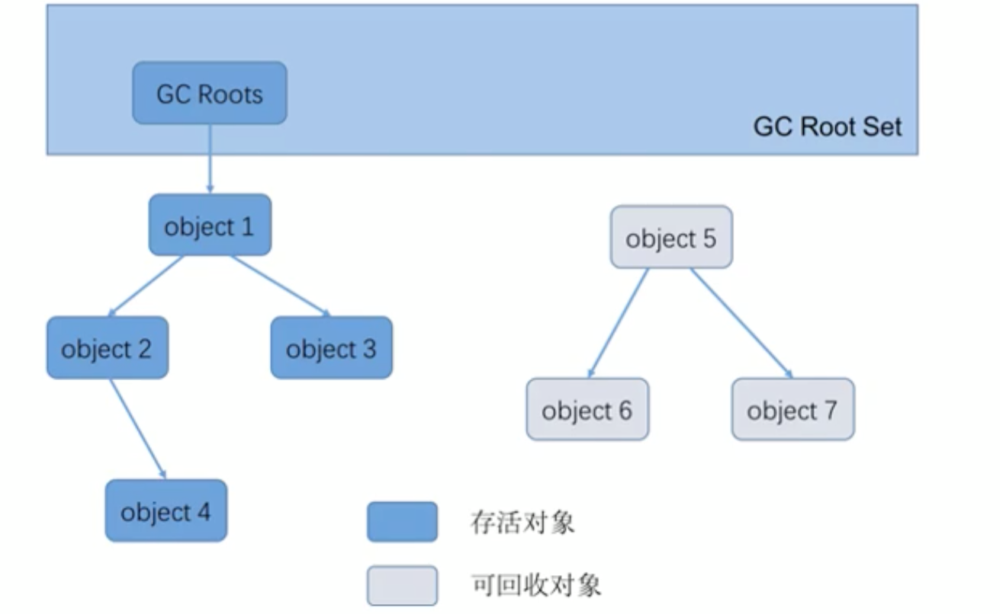
GC Roots
在Java语言中，GC Roots包括以下几类元素：
- 虚拟机栈中引用的对象
- ➢比如：各个线程被调用的方法中使用到的参数、局部变量等。
- 本地方法栈内JNI（通常说的本地方法）引用的对象
- 方法区中类静态属性引用的对象
- ➢比如：Java类的引用类型静态变量
- 方法区中常量引用的对象
- ➢比如：字符串常量池（string Table） 里的引用
- 所有被同步锁synchroni zed持有的对象
- Java虚拟机内部的引用。
- ➢基本数据类型对应的Class对象，一些常驻的异常对象（如：
NullPointerException、OutOfMemoryError） ，系统类加载器。
- 反映java虚拟机内部情况的JMXBean、JVMTI中注册的回调、本地代码缓存等
- 除了这些固定的GCRoots集合以外，根据用户所选用的垃圾收集器以及当
前回收的内存区域不同，还可以有其他对象“临时性”地加入，共同构成完整GC Roots集合。比如：分代收集和局部回收（Partial GC）。 - ➢如果只针对Java堆中的某一块区域进行垃圾回收（比如：典型的只针 对新生代），必须考虑到内存区域是虚拟机自己的实现细节，更不是孤立封闭的，这个区域的对象完全有可能被其他区域的对象所引用，这时候就需要一.并将关联的区域对象也加入GC Roots集合中去考虑，才能保证可达性分析的准确性。
- 小技巧：由于Root采用栈方式存放变量和指针，所以如果一个指针，它保存了堆内存里面的对象，但是自己又不存放在堆内存里面，那它就是一个Root
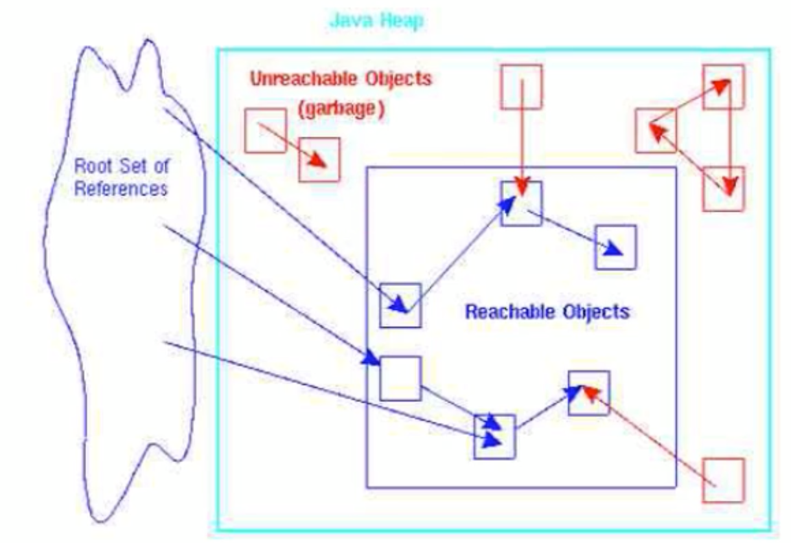
注意
- 如果要使用可达性分析算法来判断内存是否可回收，那么分析工作必须在
一个能保障一致性的快照中进行。这点不满足的话分析结果的准确性就无法保证。
- 这点也是导致GC进行时必须“StopTheWorld"的一个重要原因。
- ➢即使是号称（几乎）不会发生停顿的CMS收集器中，枚举根节点时也是必须要停顿的。
2.3 对象的finalization机制
- Java语言提供了对象终止（finalization）机制来允许开发人员提供对象被销毁之前的自定义处理逻辑。
- 当垃圾回收器发现没有引用指向一个对象，即：垃圾回收此对象之前，总会先调用这个对象的finalize（）方法。
- finalize（）方法允许在子类中被重写，用于在对象被回收时进行资源释放。通常在这个方法中进行一些资源释放和清理的工作，比如关闭文件、套接字和数据库连接等。
- 应该交给垃圾回收机制调用。理由包括下面三点：永远不要主动调用某个对象的finalize （）方法
- ➢在finalize（） 时可能会导致对象复活。
- ➢finalize（）方法的执行时间是没有保障的，它完全由Gc线程决定，极端情况下，若不发生GC，则finalize（） 方法将没有执行机会。
- ➢一个糟糕的finalize （）会严重影响GC的性能。
- 从功能上来说，finalize（）方法与C++ 中的析构函数比较相似，但是Java采用的是基于垃圾回收器的自动内存管理机制，所以finalize（）方法在本质，上不同于C++ 中的析构函数。
对象是否"死亡"
- 由于finalize （）方法的存在，==虚拟机中的对象一般处于三种可能的状态==
- 如果从所有的根节点都无法访问到某个对象，说明对象己经不再使用了。一般来说，此对象需要被回收。但事实上，也并非是“非死不可”的，这时候它们暂时处于“缓刑”阶段。==一个无法触及的对象有可能在某一个条件下“复活”自己==，如果这样，那么对它的回收就是不合理的，为此，定义虚拟机中的对象可能的三种状态。如下：
- ➢==可触及的==：从根节点开始，可以到达这个对象。
- ➢==可复活的==：对象的所有引用都被释放，但是对象有可能在finalize（）中复活。
- ➢==不可触及的==：对象的finalize（）被调用，并且没有复活，那么就会进入不可触及状态。不可触及的对象不可能被复活，因为finalize（） 只会被调用一一次。
- 以上3种状态中，是由于finalize（）方法的存在，进行的区分。只有在对象不可触及时才可以被回收。
判定是否可以回收具体过程 判定一个对象objA是否可回收，至少要经历两次标记过程：
- 如果对象objA到GC Roots没有引用链，则进行第一 次标记。
- 进行筛选，判断此对象是否有必要执行finalize（）方法
- ①如果对 象objA没有重写finalize（）方法，或者finalize （）方法已经被虚拟机调用过，则虚拟机视为“没有必要执行”，objA被判定为不可触及的。
- ②如果对象objA重写了finalize（）方法，且还未执行过，那么objA会被插入到F一Queue队列中，由一个虚拟机自动创建的、低优先级的Finalizer线程触发其finalize（）方法执行。
- ③finalize（）方法是对象逃脱死亡的最后机会，稍后Gc会对F一Queue队列中的对象进行第二次标记。如果objA在finalize（）方法中与引用链上的任何一个对象建立了联系，那么在第二次标记时，objA会被移出“即将回收”集合。之后，对象会再次出现没有引用存在的情况。在这个情况下，finalize方法不会被再次调用，对象会直接变成不可触及的状态，也就是说，一个对象的finalize方法只会被调用一次。
代码测试可复活的对象
1 | /** |
控制台输出
1 | 第1次 gc |
2.4 MAT与JProfiler的GC Roots溯源
MAT是Memory Analyzer的简称，它是一 款功能强大的Java堆内存分析器。用于查找内存泄漏以及查看内存消耗情况。
MAT是基于Eclipse开发的，是一款免费的性能分析工具。
可以在 www.eclipse org/mat/下载并使用MAT。
获取dump文件
方式1: 命令行使用jmap
- jps
- jmap -dump:format=b,live,file=test1.bin {进程id}
方式2：使用JVisualVM导出
- 捕获的heap dump文件是一个临时文件，关闭JVisua1VM后自动删除，若要保留，需要将其另存为文件。
- 可通过以下方法捕获heap dump：
- ➢在左侧“Application”（应用程序）子窗口中右击相应的应用程序，选择Heap Dump（堆Dump）。
- ➢在Monitor （监视）子标签页中点击Heap Dump （堆Dump）按钮。
- 本地应用程序的Heap dumps作为应用程序标签页的一个子标签页打开。同时，
heap dump在左侧的Application （应用程序）栏中对应一个含有时间戳的节点。右击这个节点选择save as （另存为）即可将heap dump保存到本地。
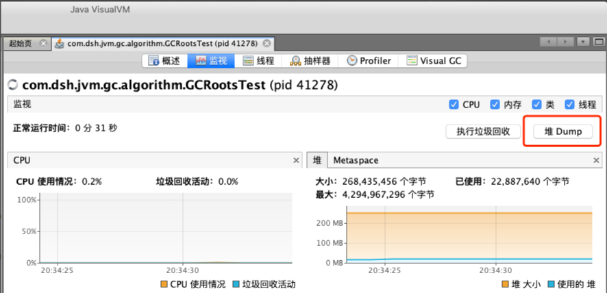
GC Roots分析
1 | public class GCRootsTest { |
使用MAT查看GC Roots
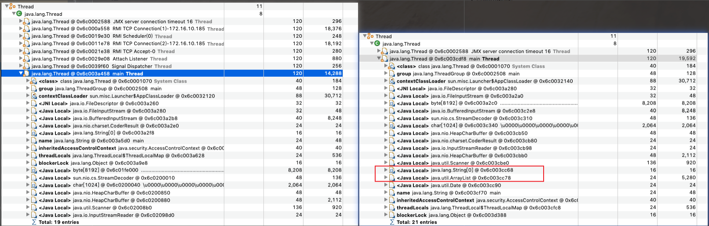
使用jProfiler进行GC溯源
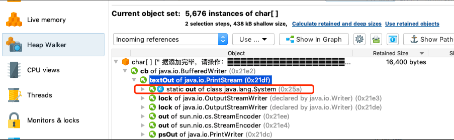
使用Jprofiler分析OOM
1 | /** |
控制台输出
1 | java.lang.OutOfMemoryError: Java heap space |
对应count=6
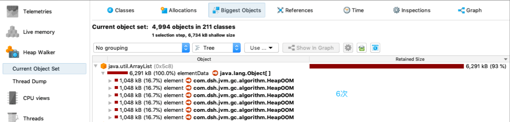
出现OOM的代码
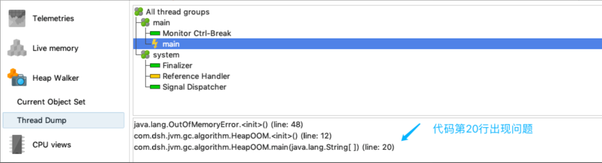
2.5 清除阶段:法1_标记-清除算法
当成功区分出内存中存活对象和死亡对象后，GC接下来的任务就是执行垃圾回收，释放掉无用对象所占用的内存空间，以便有足够的可用内存空间为新对象分配内存.
目前在JVM中比较常见的三种垃圾收集算法是标记一清除算法（ Mark一Sweep）、复制算法（Copying）、标记一压缩算法（Mark一Compact）
背景：
标记一清除算法（Mark一Sweep）是一种非常基础和常见的垃圾收集算法，该算法被J . McCarthy等人在1960年提出并并应用于Lisp语言。
执行过程：
当堆中的有效内存空间（available memory） 被耗尽的时候，就会停止整个程序（也被称为stop the world），然后进行两项工作，第一项则是标记，第二项则是清除。
- 标记： Collector从引用根节点开始遍历，标记所有被引用的对象。==一般是在对象的Header中记录为可达对象==。
- 清除： Collector对堆 内存从头到尾进行线性的遍历，如果发现某个对象在其Header中没有标记为可达对象，则将其回收。
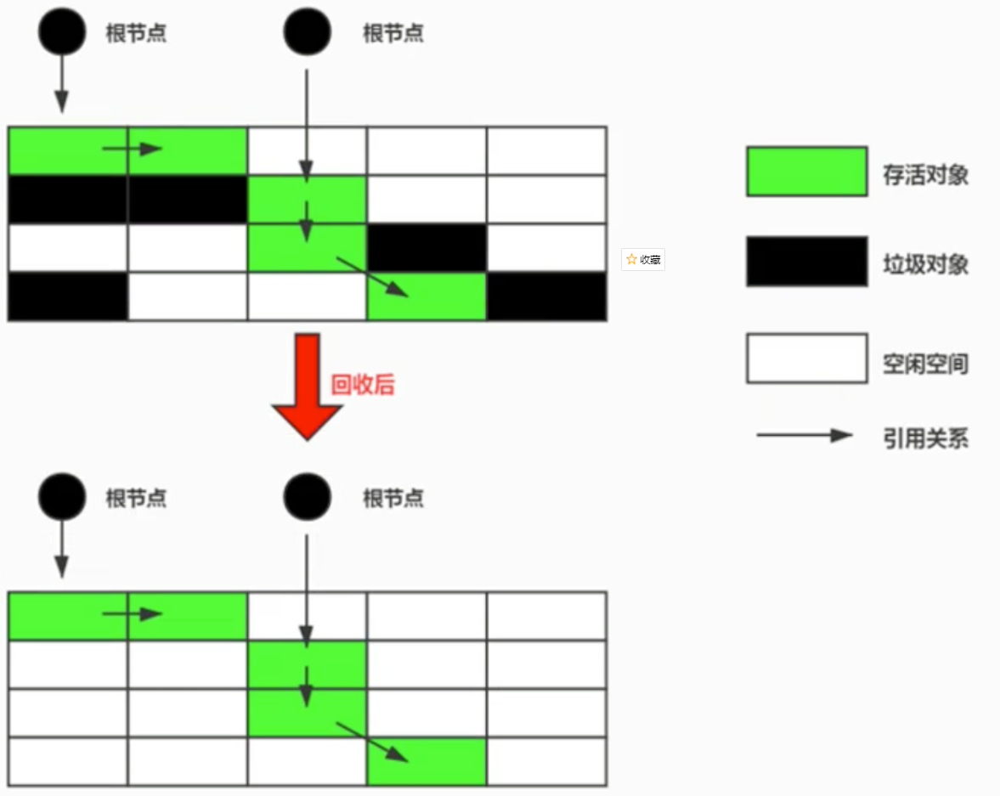
缺点
- ➢效率不算高
- ➢在进行Gc的时候，需要停止整个应用程序，导致用户体验差
- ➢==这种方式清理出来的空闲内存是不连续的，产生内存碎片==。需要维护一个空闲列表
注意：何为清除？
- 这里所谓的清除并不是真的置空，而是把需要清除的对象地址保存在空闲
的地址列表里。下次有新对象需要加载时，判断垃圾的位置空间是否够，如果够，就存放。
2.6 清除阶段:法2_复制算法
背景：
为了解决标记一清除算法在垃圾收集效率方面的缺陷，M.L.Minsky于1963年发表了著名的论文，“ 使用双存储区的Li sp语言垃圾收集器CALISP Garbage Collector Algorithm Using SerialSecondary Storage ）”。M.L. Minsky在该论文中描述的算法被人们称为复制（Copying）算法，它也被M. L.Minsky本人成功地引入到了Lisp语言的一个实现版本中。
核心思想：
将活着的内存空间分为两块，每次只使用其中一块，在垃圾回收时将正在.使用的内存中的存活对象复制到未被使用的内存块中，之后清除正在使用的内存块中的所有对象，交换两个内存的角色，最后完成垃圾回收。
堆中S0和S1使用的就是复制算法
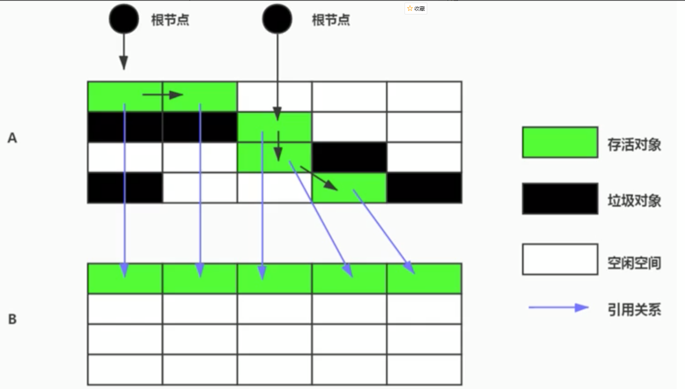
优点：
- 没有标记和清除过程，实现简单，运行高效
- 复制过去以后保证空间的连续性，不会出现“碎片”问题。
缺点：
- 此算法的缺点也是很明显的，就是需要两倍的内存空间。
- 对于G1这种分拆成为大量region的GC，复制而不是移动，意味着GC需要维护region之间对象引用关系，不管是内存占用或者时间开销也不小。
特别的 如果系统中的可用对象很多，复制算法不会很理想,复制算法需要复制的存活对象数量并不会太大，或者说非常低才行。
应用场景：
在新生代，对常规应用的垃圾回收，一次通常可以回收708一 99的内存空间。回收性价比很高。所以现在的商业虚拟机都是用这种收集算法回收新生代。
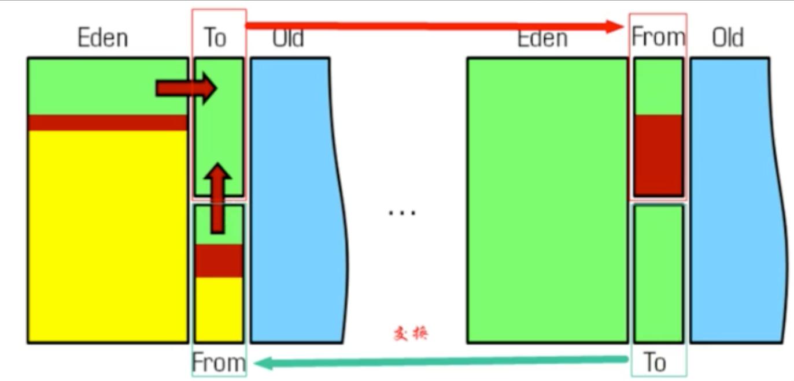
2.7 清除阶段:法3_标记-压缩(整理,Mark-Compact)算法
背景：
复制算法的高效性是建立在存活对象少、垃圾对象多的前提下的。这种情况在新生代经常发生，但是在老年代，更常见的情况是大部分对象都是存活对象。如果依然使用复制算法，由于存活对象较多，复制的成本也将很高。因此，基于老年代垃圾回收的特性，需要使用其他的算法。
标记一清除算法的确可以应用在老年代中，但是该算法不仅执行效率低下，而且在执行完内存回收后还会产生内存碎片，所以JVM的设计者需要在此基础之上进行改进。==标记一压缩（Mark一Compact） 算法由此诞生==。
1970年前后，G. L. Steele 、C. J. Chene和D.S. Wise 等研究者发布标记一压缩算法。在许多现代的垃圾收集器中，人们都使用了标记一压缩算法或其改进版本。
执行过程：
- 第一阶段和标记一清除算法一样，从根节点开始标记所有被引用对象.
- 第二阶段将所有的存活对象压缩到内存的一端，按顺序排放。
- 之后，清理边界外所有的空间。
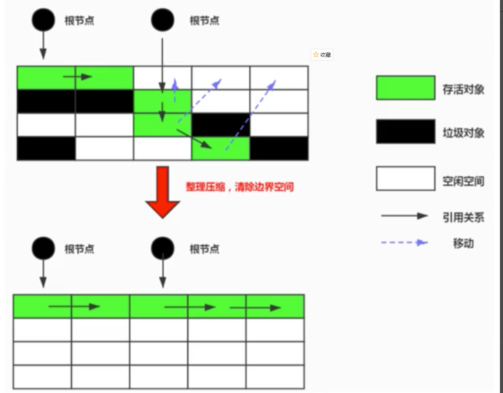
- 标记一压缩算法的最终效果等同于标记一清除算法执行完成后，再进行一次内存碎片整理，因此，也可以把它称为标记一清除一压缩（Mark一 Sweep一Compact）算法。
- 二者的本质差异在于标记一清除算法是一种非移动式的回收算法，标记一压.缩是移动式的。是否移动回收后的存活对象是一项优缺点并存的风险决策。
- 可以看到，标记的存活对象将会被整理，按照内存地址依次排列，而未被标记的内存会被清理掉。如此一来，当我们需要给新对象分配内存时，JVM只需要持有一个内存的起始地址即可，这比维护一个空闲列表显然少了许多开销。
指针碰撞（Bump the Pointer ）
如果内存空间以规整和有序的方式分布，即已用和未用的内存都各自一边，彼此之间维系着一个记录下一次分配起始点的标记指针，当为新对象分配内存时，只需要通过修改指针的偏移量将新对象分配在第一个空闲内存位置上，这种分配方式就叫做指针碰撞（Bump the Pointer） 。
优点
- 消除了标记一清除算法当中，内存区域分散的缺点，我们需要给新对象分配内存时，JVM只 需要持有一个内存的起始地址即可。
- 消除了复制算法当中，内存减半的高额代价。
缺点
- 从效率.上来说，标记一整理算法要低于复制算法。
- 移动对象的同时，如果对象被其他对象引用，则还需要调整引用的地址。· 移动过程中，需要全程暂停用户应用程序。即： STW
2.8 小结
- 效率上来说，复制算法是当之无愧的老大，但是却浪费了太多内存。
- 而为了尽量兼顾上面提到的三个指标，标记一整理算法相对来说更平滑一些，但是效率.上不尽如人意，它比复制算法多了一个标记的阶段，比标记一清除多了一个整理内存的阶段。
| Mark-Sweep | Mark-Compact | Copying | |
|---|---|---|---|
| 速度 | 中等 | 最慢 | 最快 |
| 空间开销 | 少(但会堆积碎片) | 少(不堆积碎片) | 通常需要活对象的2倍大小(不堆积碎片) |
| 移动对象 | 否 | 是 | 是 |
2.9 分代收集算法
难道就没有一种最优的算法么?
==没有最好的算法,只有更合适的算法==
前面所有这些算法中，并没有一种算法可以完全替代其他算法，它们都具有自己独特的优势和特点。分代收集算法应运而生。
分代收集算法，是基于这样一个事实：不同的对象的生命周期是不一样的。因此，==不同生命周期的对象可以采取不同的收集方式，以便提高回收效率==。一般是把Java堆分为新生代和老年代，这样就可以根据各个年代的特点使用不同的回收算法，以提高垃圾回收的效率。
在Java程序运行的过程中，会产生大量的对象，其中有些对象是与业务信息相关，比如Http请求中的Session对象、线程、Socket连接， 这类对象跟业务直接挂钩，因此生命周期比较长。但是还有一些对象，主要是程序运行过程中生成的临时变量，这些对象生命周期会比较短，比如： String对象， 由于其不变类的特性，系统会产生大量的这些对象，有些对象甚至只用一次即可回收。
目前几乎所有的GC都是采用分代收集（Generational Collecting） 算法执行垃圾回收的。 在HotSpot中，基于分代的概念，GC所使用的内存回收算法必须结合年轻代和老年代各自的特点。
- 年轻代（Young Gen）
- 年轻代特点：区域相对老年代较小，对象生命周期短、存活率低，回收频繁。
- 这种情况==复制算法==的回收整理，速度是最快的。复制算法的效率只和当前存活对象大小有关，因此很适用于年轻代的回收。而复制算法内存利用率不高的问题，通过hotspot中的两个survivor的设计得到缓解。·
- 老年代（Tenured Gen）
- 老年代特点：区域较大，对象生命周期长、存活率高，回收不及年轻代频繁。
- 这种情况存在大量存活率高的对象，复制算法明显变得不合适。一般是由标记一清除或者是标记一清除与标记一整理的混合实现。
- ➢Mark阶段的开销与存活对象的数量成正比。
- ➢Sweep阶段的开销与所管理区域的大小成正相关。
- ➢Compact阶 段的开销与存活对象的数据成正比。
以HotSpot中的CMS回收器为例，CMS是基于Mark一 Sweep实现的，对于对象的回收效率很高。而对于碎片问题，CMS采用基于Mark一Compact算法的Serial 0ld回收器作为补偿措施：当内存回收不佳（碎片导致的Concurrent Mode Failure时），将采用Serial 0ld执行Full GC以达到对老年代内存的整理。
分代的思想被现有的虚拟机广泛使用。几乎所有的垃圾回收器都区分新生代和老年代。
2.10 增量收集算法、分区算法
增量收集算法
上述现有的算法，在垃圾回收过程中，应用软件将处于一种stop the World的状态。在Stop the World状态下，应用程序所有的线程都会挂起，暂停一切正常的工作，等待垃圾回收的完成。如果垃圾回收时间过长，应用程序会被挂起很久，将严重影响用户体验或者系统的稳定性。为了解决这个问题，即对实时垃圾收集算法的研究直接导致了增量收集（Incremental Collecting） 算法的诞生。
基本思想
如果一次性将所有的垃圾进行处理，需要造成系统长时间的停顿，那么就可以让垃圾收集线程和应用程序线程交替执行。每次，垃圾收集线程只收集一小片区域的内存空间，接着切换到应用程序线程。依次反复，直到垃圾收集完成。
总的来说，增量收集算法的基础仍是传统的标记一清除和复制算法。增量收集算法通过对线程间冲突的妥善处理，允许垃圾收集线程以分阶段的方式完成标记、清理或复制工作。
缺点：
使用这种方式，由于在垃圾回收过程中，间断性地还执行了应用程序代码，所以能减少系统的停顿时间。但是，因为线程切换和上下文转换的消耗，会使得垃圾回收的总体成本上升，造成系统吞吐量的下降。
分区算法
一般来说，在相同条件下，堆空间越大，一次GC时所需要的时间就越长，有关GC产生的停顿也越长。为了更好地控制GC产生的停顿时间，将一块 大的内存区域分割成多个小块，根据目标的停顿时间，每次合理地回收若干个小区间，而不是整个堆空间，从而减少一次GC所产生的停顿。
分代算法将按照对象的生命周期长短划分成两个部分，分区算法将整个堆空间划分成连续的不同小区间。
每一个小区间都独立使用，独立回收。这种算法的好处是可以控制一次回收多少个小区间。
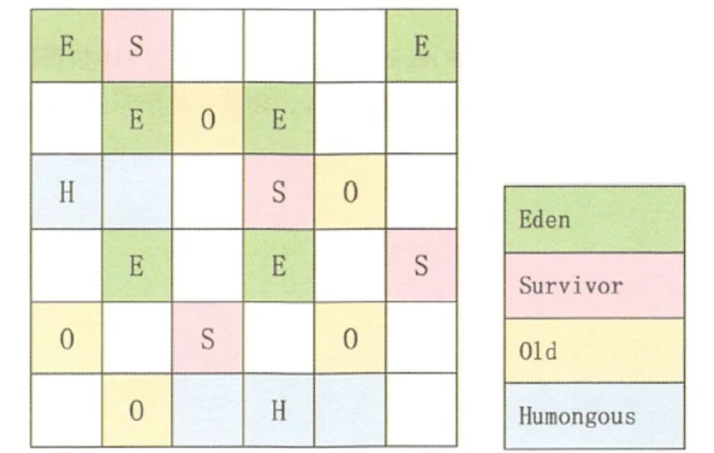
写在最后
注意，这些只是基本的算法思路，实际GC实现过程要复杂的多，目前还在发展中的前沿GC都是复合算法，并且并行和并发兼备。
如果您喜欢此博客或发现它对您有用，则欢迎对此发表评论。 也欢迎您共享此博客，以便更多人可以参与。 如果博客中使用的图像侵犯了您的版权，请与作者联系以将其删除。 谢谢 ！